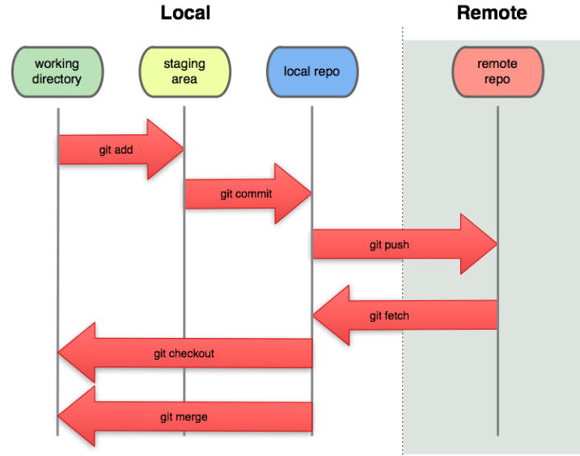
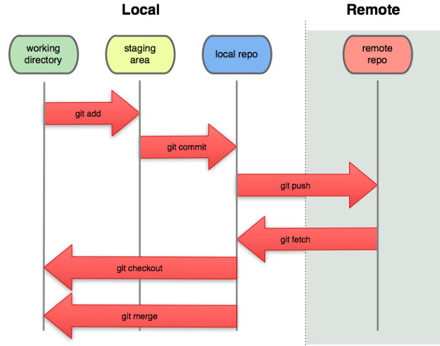

CLASE 3 - NODEJS
En la clase de hoy veremos como crear un proyecto de Front de VUE, para ello necesitamos varios elementos a parte de Vue y las vue dev tools:
- Un editor de texto como Visual Studio Code (Serviría hasta el notepad de windows o el vi de linux).
- NodeJS y su gestor de paquetes NPM.
Es opcional pero recomendable usar tambien:
- Git: El software de gestión de versiones más usado actualmente y desde hace años.
- Vue-cli: una libreria del entorno de vue que te proporciona una interfaz de comandos y gráfica (vue ui) para manejar tus proyectos
0 - Instalación de NODEJS Y NPM
Para instalar ambos, tenemos que bajarnos el instalador de la página oficial e instalarlo como cualquier ejecutable de windows:
https://nodejs.org/es/Una vez instalado, podemos comprobar que funciona correctamente ejecutando el comando:
node -vnpm -v1 - Entorno NODE
Node es un entorno de ejecución de Javascript para ejecutar javascript del lado del servidor.
A parte de hacer un frontend moderno, podriamos crear aplicaciones node multiproposito, es decir, de backend, escritorio, internet de las cosas, IAs, etc...
Para ello cuenta con una serie de librerias que nos permiten manejar los objetos necesarios para crear cualquier programa, como el resto de lenguajes multiplataforma.
Documentación de las librerias de NodeJS1.1 - Ejecución de NodeJS
Para ejecutar un entorno de Javascript interactivo solo debemos usar el comando:
nodePara salir, pulsamos ctrl + C dos veces.
Para ejecutar un archivo:
node archivo.jsComo ejemplo os traigo como crear un par de servidores en javascript: server.js y server2.js
Por último, para actualizarlo se recomienda en windows desinstalarlo e instalarlo de nuevo, pero existen otras alternativas, paquetes npm como n, npx o nvm que te permiten tener distintas versiones de node.
1.2 - NPM, package.json y package-lock.json
NPM es el gestor de paquetes de node, para actualizarlo es muy sencillo, Dado que el propio npm es un paquete de npm
npm update -g npmEl fichero package.json almacena los datos y configuración más importantes de la App que estamos desarrollando, el nombre, versión, dependencias, etc. Se crea con el comando:
npm initNos permite ejecutar cualquier tipo de jecución por consola:
npm startEl fichero package-lock.json contiene toda la jerarquía del arbol de dependencias, para evitar discrepancias entre las versiones de los paquetes
1.3 - paquetes NPM
Antes de empezar con los comandos que tiene npm, me gustaría aclarar cómo funcionan el número de versión que tienen los paquetes.
Los paquetes de NPM suelen seguir un versionado semántico, es decir: MAJOR.MINOR.PATCH.
Dada una versión 5.4.3
- El primer número (5) indica una versión grande del paquete, cuando este número cambia se supone que ha habido un cambio grande en el paquete que rompe lo que había con la versión anterior.
- El segundo número (4) indica una versión menor, en esta versión se resuelven errores anteriores y se añaden cosas pero sin romper la versión anterior, es decir, esta versión será compatible con una versión anterior y por lo tanto se puede actualizar con seguridad.
- El último número (2) indica arreglo de errores y pequeños fallos pero sin añadir funcionalidad, por lo tanto también es compatible con versiones anteriores.
Como he explicado antes, npm al usar versionado semántico, puedes indicar que tipo de actualización quieres en cada paquete
- ~1.0.4, solo va a actualizar el último número, es decir, va a subir solo de versión patch
- ^1.0.4, solo va a actualizar los dos últimos números, es decir, va a subir solo de versión minor, comportamiento por defecto de NPM
- *1.0.4, va actualizar también de versión mayor.
- @latest se descarga la ultima versión publicada.
Como se gestionan los paquetes con npm:
- Globalmente (nodemon): se instalan de forma global, añadiendose al PATH en "%AppData%/npm/" y se pueden usar directamente en la linea de comandos
- Localmente (cowsay): se instalan para un proyecto, se linkean en la carpeta "node_modules/.bin/" del proyecto, no se añaden en el PATH y hay que ejecutarlos como script de npm (package.json) o desde la carpeta instalada.
- Npx (cowsay): lo baja, lo ejecuta y lo borra y permite ejecutar, por ejemplo paquetes de github y otros.
1.4 - comandos NPM
Comandos iniciales:
- npm init [-y]: Inicia un proyecto npm
- npm run <nombre_comando>: Mira comandos que tienes en el package.json y los ejecuta si los encuentra.
Comandos de busqueda:
- npm search [string]: Busca packetes del repositorio que coincidan con la cadena descrita.
- npm docs <nombre-paquete>: Muestra el README.md/documentation/página npmjs.org page del paquete especificado.
- npm info <nombre-paquete>: Muestra información del paquete por consola.
Comandos de listado:
- npm list|npm ls: Sirva para pintar en pantalla el nombre de todos los paquetes instalados en el proyecto en el que estemos situados, nos da el nombre del paquete, su versión y las dependencias que haya encontrado.
- npm list --depth <numero>: Indicamos que queremos una profundidad de 0, solo va a mostrar los paquetes que hay en el package.json. Una profundidad de 1 mostrará esos paquetes más sus dependencias directas, y así sucesivamente.
- npm list -g: Lista los paquetes instalados globalmente.
Comandos de instalación:
- npm uninstall [-g] <nombre-paquete>|npm un: Lo contrario a instalar un paquete, lo elimina de la carpeta node_modules y de las dependencias del package.json
- npm install|npm i: Instala las dependencias del package.json o instala un nuevo paquete para el proyecto.
Lee el archivo del package.json para instalar todas las dependencias que encuentre. Si el paquete ya estaba instalado va a intentar actualizarlo.
Lo primero que se hace cuando te bajas un repositorio de git con paquetes npm es ejecutar este comando para que descargue todas las librerías, de lo contrario no funcionará.
MODIFICADORES:
- npm install <nombre-paquete@version-name>: Descarga el paquete y lo mete en la carpeta node modules. Para buscar el nombre del paquete repositorio de npmjs: https://www.npmjs.com/
- npm install --global <nombre-paquete>| npm i -g
: Instalar un paquete globalmente. - npm install <nombre-paquete> --save-exact: Al guardarse en el package.json se guarda con la versión exacta en ese momento, es decir, nunca se va actualizar. Esto permite mantener siempre la misma versión para que todo funcione igual.
- git://github.com/usuario/repositorio.git#v0.1.0: También puedes instalar paquetes directamente desde el repositorio de github. Además al final puedes indicar la versión que quieres descargar (tirará de los tags del repositorio) y también puedes tirar de ramas para no tener problemas de versiones.
- --save-dev|-D: Instala el paquete como dependencia de desarrollo, no se transpila para producción.
Comandos de actualizacion:
- npm outdated: Como su nombre indica, imprime una lista con los paquetes desactualizados.
- npm update|npm up: Actualiza todos los paquetes del package.json en caso de que hayan sido actualizados.
- npm update <nombre-paquete>: Actualiza el paquete en particular.
Como recomendación te aconsejo que instales este paquete para tener un listado de posibles actualizaciones de los paquetes:
npm i -g npm-check-updates > permite ejecutar ncu
2 - GIT
Para instalarlo, tenemos que bajarnos el instalador de la página oficial e instalarlo como cualquier ejecutable de windows:
https://git-scm.com/Una vez instalado, podemos comprobar que funciona correctamente ejecutando el comando:
git --versionAntes de probarlo, lo primero que hay que hacer es configurarlo:
git config --global user.email "you@example.com"git config --global user.name "Nombre"2.1 - RESUMEN ÉPICO DE USO
REPOSITORIO REMOTO
- git clone [url] [newName]: Clona el repo de la url donde estes con el nombre newName.
- Git te permite usar distintos protocolos de transferencia: git://, o http(s):// o usuario@servidor:/ruta.git
SUBIR CAMBIOS
- git pull : Obtiene los cambios del servidor
- git commit -am "mensaje" : Git prepara los archivos y guarda los cambios EN LOCAL
- git push origin master : Git sube tus cambios comiteados al servidor configurado (GitLab)
2.2 - Estados de Git
 

Cada archivo en nuestro proyecto de trabajo puede estar en uno de estos dos estados:
- Bajo seguimiento (tracked): Los archivos bajo seguimiento son aquellos que ya existían en el último commit
- Unmodified: sin modificar
- Modified: modificados
- Staged: preparados (para comitear)
- Sin seguimiento (untracked): Son todos los demás, cualquier archivo que no estuviese en el último commit ni tampoco en el área de preparación (staging area)
2.3 - Comandos de uso común
Crear un repositorio:
- git init: Inicia un repositorio local vacio en la carpeta actual.
- git clone URL [nombre]: Te bajas el repositorio de esa URL y crea una carpeta con su/[el nombre pasado]
Observar cambios:
- git status: Muestra los archivos con cambios.
- git diff [archivo]: Muestra los cambios que tienen los archivos/[el archivo especificado].
- git diff --staged: Muestra los cambios de los archivos preparados.
Guardar cambios local:
- git add [.]/[archivo/carpeta]: prepara para comitear los archivos/el archivo o ruta
- git reset [.]/[archivo/carpeta]: quita para comitear los archivos/el archivo o ruta
- git commit -m "mensaje de commit": comitea los cambios preparados
- git commit -am "mensaje de commit": git add + git commit
- git reset --hard: deshace los cambios desde el ultimo commit
- git checkout -- archivo: deshace los cambios de ese archivo
Guardar cambios servidor:
- git pull: baja los cambios del servidor a local
- git push origin master: sube los cambios comiteados en local al servidor
2.4 GITLAB:
VER EN REAL
3 - VUE CLI (Command Line Interface)
Es una interfaz para crear proyectos de Vue, tanto por consola como de forma gráfica.
Lo instalaremos de forma global, para ello solo hay que ejecutar el siguiente comando:
npm install -g @vue/cli3.0 - Ecosistema de VUE
A parte del CLI, VUE cuenta con una serie de librerias necesarias para proyectos medianos y grandes:
- Vuetify: Es un framework CSS que nos brinda una gran lista de componentes estéticos y visuales.
- Vue-router: Es una libreria que actua de enrutador de la aplicación desde el cliente, creando diferentes "páginas en el cliente"
- VUEX: Es la libreria que se encarga de guardar el estado de la aplicación (los datos), actua como un tipo de session en el front, permitiendo el acceso y la modificación de los datos entre distintos componentes.
- Nuxt, Weex y Quasar: Se encargan del render de las páginas en servidor y la exportación de las aplicaciones a escritorio y movil.
3.1 - VUE CLI Consola
Para crear un proyecto nuevo solo debemos escribir el siguiente comando y seguir las instrucciones que se muestran por consola:
vue create <nombre-proyecto>Te preguntará una serie de cosas y con eso construirá el proyecto.
3.2 - VUE UI
Es una interfaz web que nos permite gestionar nuestros proyectos de vue de forma gráfica.
vue ui